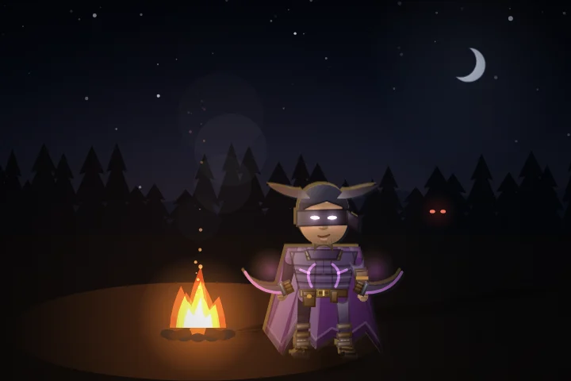
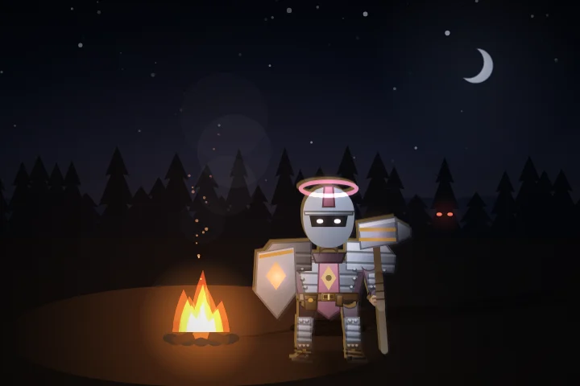
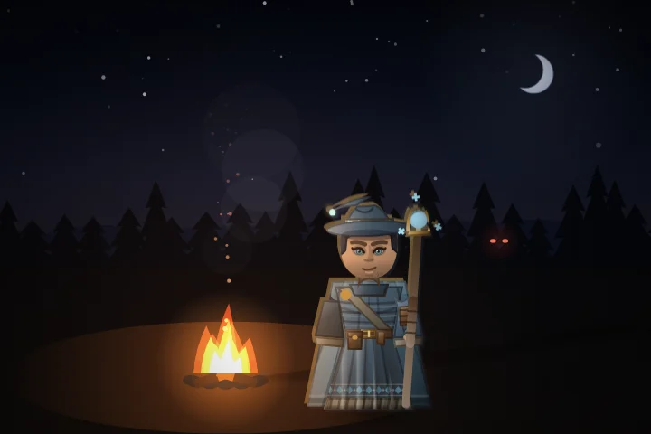
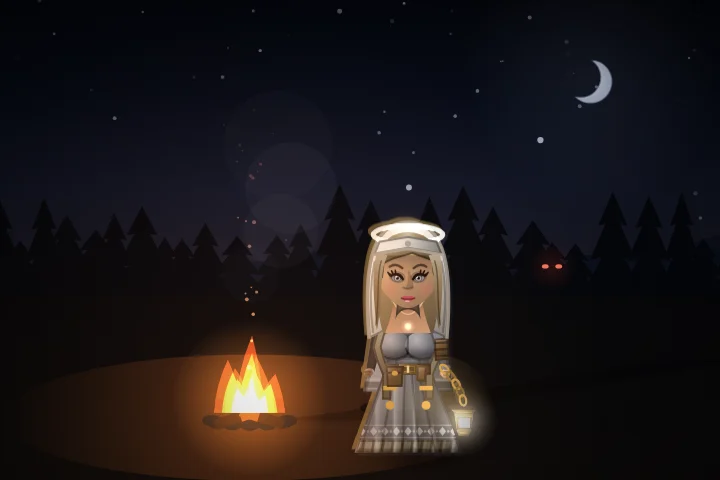
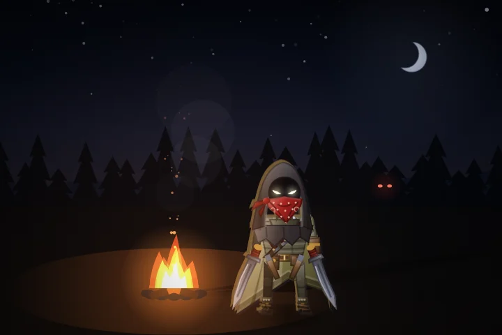
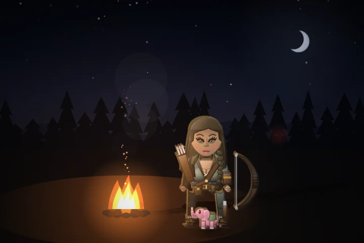
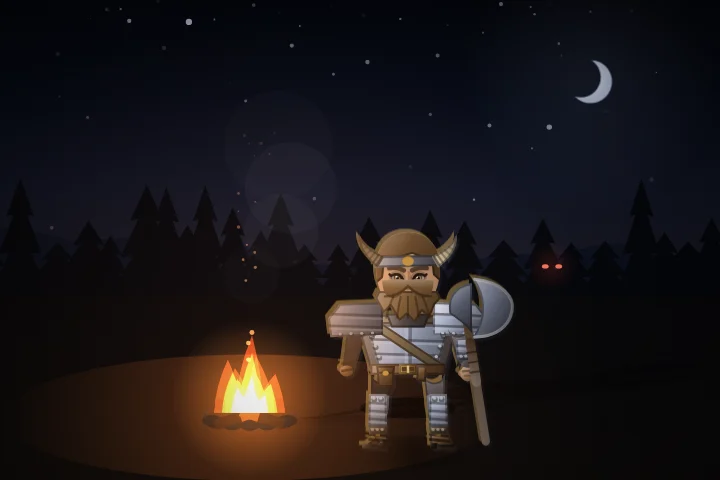
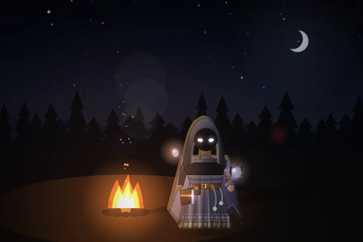
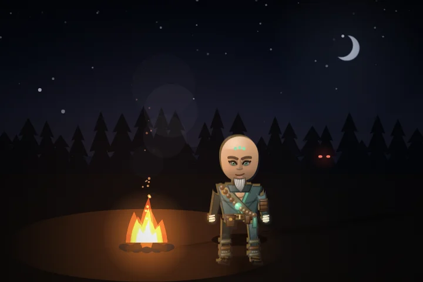

Even ground.
A tester's strongest builds could stand still from 20:00 and win, and a handful of abilities did most of every build's damage: Ruin Unbound half the meter, Conviction most of Keegan's, Grave Tether most of everyone's healing. We measured every weapon, union, discovery and calling against the same crowd and the same boss, then brought them into one band.


Ruin Unbound: half the meter to a fifth.
Last patch we checked it on a training dummy and left it alone. Testers kept seeing it at half the damage meter, and they were right: its homing, piercing, splashing bolts reach the crowd first and take every kill.
Its share of a build's damage, next to the same four evolved weapons, at 21:00 on the Pale Wastes, Professional, Hyper. Every union now sits between 18% and 29%.
Why its hit reads higher. Its damage per bolt goes 25.5 → 20.4 → 37.9 over this patch. The first cut is the nerf. The later rise is the rest of the arsenal: it is forged from an evolved Umbral Bolt and Cinderfall, and an evolved Umbral Bolt now pierces everything (nearly four times the damage it did). Ruin Unbound is set to what those two did together, and on the meter it went from the biggest share of any union to one of the smallest.
Every weapon, one band.
All of this happens when a weapon evolves. Nothing changes before that, so the first twenty minutes of a night play as they did. Figures are damage per second from that one weapon, evolved at rank 8, held by a level-150 survivor with every passive at its cap, at 20:00 on the Pale Wastes, Professional, Hyper. "A crowd" is 320 targets standing where a real horde stands; "a boss" is one that closes and gets kited off.
Area weapons
Built to clear a crowd. Aimed at about 150k a second against a late crowd and about 2k on a boss. The six at the top came down; nothing here is more than twice anything else now.
Lines, bounces and chains
Aimed at about 90k against a crowd and about 3k on a boss. Most of these were far behind: Arcweb did 3k a second against the same crowd Axe Gyre did 552k to.
Bolts
The single-target weapons. Aimed at about 65k against a crowd and the best boss damage in the game, about 4k.
Axe Gyre and Blightfield now show a lower Damage line when they evolve (×0.68 and ×0.85). Both still more than double on evolving, from the wider reach and faster spin.
Every union takes a fair share.
Unions were measured the way testers read them: the share of a build's damage each one takes beside four evolved weapons. Storm of Steel, Sanctuary and The Wild Hunt had fallen far behind (forging Storm of Steel made a build weaker); Ruin Unbound had run away. All eight now take between 18% and 29%.
| Union | Damage | Vs bosses | Share of a build | |
|---|---|---|---|---|
| FirmamentSeeking Motes + Moonbrand | Buff | 18.2 → 24.2 | ×1 → ×2.4 | 20% |
| Nerf | 20.38 → 37.9 | ×1 → ×1.95 | 18% | |
| Buff | 16.38 → 25pierce 3 → 12 | ×1.6 → ×5.3 | 29% | |
| Buff | 23.66 → 109 | ×3.7 → ×5.3 | 26% | |
| Buff | 23.66 → 29 | ×1 → ×2.5 | 21% | |
| Buff | 9 → 13.2 | ×1.8 → ×4.8 | 18% | |
| The Wild HuntSpirit Herd + Verdant Lance | Buff | 22 → 46 | ×1.55 → ×4.8 | 26% |
| Buff | 11 → 13.4 | ×1 → ×3.2 | 18% |
Shares measured at 21:00 on the Pale Wastes, Professional, Hyper, over eight seeds; the same numbers move by up to eight points from one run to the next.
One came down, two started working.
Shadowflame
Umbral Bolt and Cinderfall. Every bolt that passes through something bursts, and an evolved bolt now passes through everything. The pair did 2.3 times what its two weapons do apart; now 1.4.
Moonlit Herd and Bramble Run
The moonburst and the thicket went off where a beast's run ended, usually on empty ground past the crowd. They now land where the beast last hit something. The Wild Hunt's end-of-run burst too.
Unions keep their discoveries
Forging a union used to throw away every discovery its two weapons were part of. A union now keeps them, and can still find new ones. Firmament's strikes count Celestial Alignment's extra beam.
Eight survivors get a power of their own.
The four newest survivors each carry a whole system of their own. The first eight now do too: a legendary blessing anyone can take, always offered to its owner, who gets one small edge (exactly a quarter on one number).

NewSpellflood
Baron Zul · MageGems swell the Flood. Full, every weapon fires and cooldowns run at half for 5 seconds.

NewRadiant Barrier
Chid · PriestOverheal becomes a barrier that takes hits first and bursts as Light when it breaks. It stops refilling for 2s after a hit and 6s after it breaks, so a crowd can wear it down.

NewOpportunist
Dr. Rav McBreathless · RogueCrits build Edge. Full, a Cutthroat blow on the toughest thing near you, then you slip from sight.

NewThe Quarry
Maeca Barefoot · HunterThe toughest non-boss in sight takes more from everything. Killing it readies every weapon and mends you.

NewSeething Blood
AAAAAAAAA · WarriorBlows and close kills heat the blood; heat is armour and damage. Full, you Boil Over.

NewReaper's Tithe
Nim B'ladin · WarlockKills pay the Tithe. Half paid empowers you; paid in full, a Reaping heals per enemy struck, up to 15% of your health, then rests 5s.
 New
NewWaystones
Vonnra Hydrocheck · ShamanEmber, spring and gale stones rise where you stand. The ember stone's burn grows 0.4 a level, not 1.2: on its own it outdid every weapon late (282k a second to a crowd, now 104k).
Conviction
Professor Keegan · PaladinBlows you take and healing you receive build it. At 36, Judgement: every creature on the field is struck down and bosses lose 4% of their health, with a 2s Aegis. Then 20s before it gathers again.
Conviction was a Hammerfall
It filled at 3, rested 4 seconds, and dropped a blast around Keegan every few seconds. It was 60% of a tester's damage meter and 48% of his damage standing still, and its Aegis kept him untouchable nearly half the time. Judgement is rare and total: one or two in ten minutes of standing still, more when you take the fight to them. It is now under 7% of his damage.
The Aegis lasts as long as it shows
The hit that filled Conviction raised the gold dome, then its own half-second grace cut the protection short. Blows got through while the dome was still up. Now it holds for the full two seconds.
The outliers come back to the pack.
Every blessing on every survivor, thirty runs each on the same four weapons. Most landed within a few seconds of each other; these did not.
Ruinous Pact
The strongest signature for anyone. Ruinform hits less hard and rests longer after.

Stillwater Step
Two steps every seven seconds. Abbot Eisen's edge is now only the shorter wait; his extra step is gone (it gave him nearly twice anyone else's steps).
Leech Pact and Bloodthirst
Both heal with your damage and kill rate, which never stop growing. Late at night the Pact healed 25 to 32 a second, everything a kiting build takes.
Five healers instead of one.
Grave Tether was a must-take on the hard settings and every other healer an afterthought. Every healing weapon now mends per enemy it strikes, capped per cast, rising with rank and evolution, and all of them heal from rank 1.
| Evolved, at 15:00 | Healing a second |
|---|---|
| 170–273 → 64 | |
| 3.4 → 62 | |
| 3.9 → 52 | |
| 0 → 51 | |
| 6.6 → 45 | |
| 1.5 → 43 |
Standing and taking it
A warrior with every defensive passive stood in the crowd exactly as long as a glass mage: ten seconds. Armour now bites harder, thorns throw back more, and Searing Aura burns hotter the more armour you wear. A full tank with a healer now holds the crowd for the full minute at 5:00 and 15:00 (37s and 19s before).
Fewer bombs, fewer hourglasses.
"I can easily chain bombs and time stops together the entire run by grabbing Fortune early." A luck build finished a night with 74 sapper charges and 46 hourglasses.
Luck halved
Drops halved
Coins, sapper charges, lodestones and hourglasses from kills drop half as often. Potions, supply caches and elite chests are unchanged.
Sapper charges on bosses
Also in this patch
Highmoor's storms
A setting added for Conviction overwrote Highmoor's own, so every storm strike landed at 190 wide instead of 88, nearly five times the area. Back to 88.
Axe Gyre in a crowded build
The meter was right: ranged weapons killed what would have reached the blades. Blades now deal 65% of the weapon's damage per touch, not 50% (Stormcall too).
Six weapons means six
The Graveblade and twin glaives could hand over a seventh or eighth weapon. The cap now holds everywhere.
Overtime after a finale
The horde after a finale no longer counts the finale's length, and Death's first visit comes a full interval after overtime begins.
Charge lanes stay put
A charge's warning lane stays where the charge began instead of riding along with the creature.
Readable meters
Every weapon keeps a row on the damage meter, named for what did it, and healing from a weapon is credited to that weapon.
Ordinary builds last longer late.
Raising the weakest weapons did more than trimming the strongest. The average weapon does what it did before, but a plain six-weapon build that used to fall 13 seconds after 20:00 now holds out for about four and a half minutes. The tester's strongest builds still hold out to the end; the damage behind them is just spread across more of their weapons.